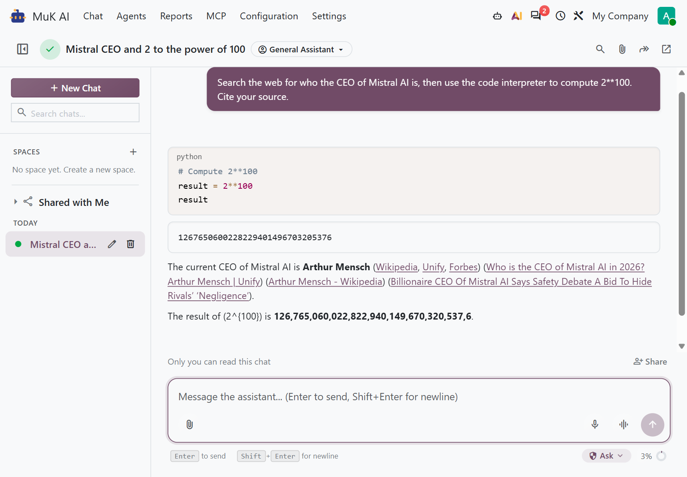
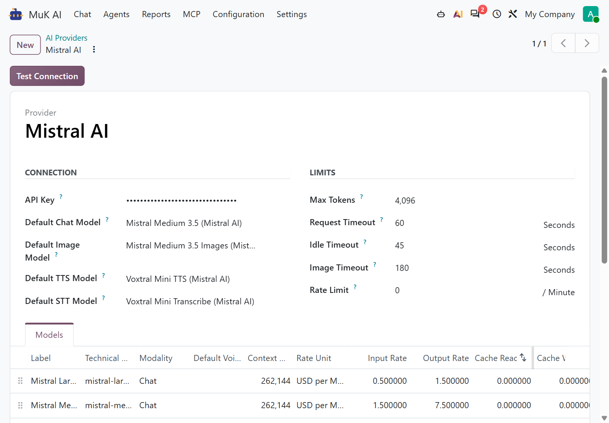

Add Mistral AI to the MuK AI chat with your own API key. Its models arrive priced and ready, with tools, web search, code interpreter and image generation, on Mistral's own API.
Paste the API key and the Mistral catalogue is there, with context windows and prices already filled in.
An answer that reaches the Max Tokens limit says it was cut off, so a short answer is never mistaken for a full one.
Agents, tools and approvals work as they do on any other provider; only the model behind them changes.

Mistral's own web search and code interpreter follow the switches on the agent, the same switches every MuK AI provider reads.
The agent calls the same Odoo tools and stops for the same approvals. A tool named like one of Mistral's own is renamed on the way and back.
Mistral searches the web itself and cites each source inline, where the answer uses it.
The model runs Python for a calculation or an analysis, and the answer shows the code and what it printed.
Attach a photo or a PDF and the model reads it. Where a step needs data rather than prose, it answers in structured JSON.
Mistral Medium 3.5 Images is an image model any agent can pick. Each picture is priced per image and added to the chat's cost.
The model's thinking streams beside the answer, not into it, so the answer reads clean.
Mistral Large, Medium and Small, the three Ministral sizes, Codestral and Z.ai GLM, an open model Mistral hosts, come with their context windows and their prices per million tokens, so every chat shows what it cost.
Paste the API key and test the connection on the provider form, then make Mistral the default provider or give it to one agent.

What you get for free, and what has to be paid work.
Issues and merge requests are welcome on the public repository. They are read — but no response time is promised.
An agent on Mistral built for your process, or a fix on a deadline, is paid work — quoted up front. Write to sale@mukit.at.
LGPL-3. Use it, change it, ship it inside your own work — no licence key, no database count.
Modules written for your process, on your Odoo version.
Odoo joined up with the systems you already run.
Hosting, deployment and upgrades you do not have to watch.
Your team taught the parts of Odoo they actually use.
An agreement, so an answer does not depend on who is free.
Odoo.sh or on-premise, Community or Enterprise, MuK AI Assistant, and an API key from your Mistral account.
Under MuK AI › Configuration › Providers › Mistral AI, paste the API key and test the connection.
Depends on muk_ai. Install it like any other module; the provider and its models are there at once.
Make Mistral the default provider or pick it on an agent, then switch on web search, code interpreter or image generation there.
The API key, the model rates and each agent's choice are records, and an upgrade keeps them.
MuK IT GmbH, Vienna. Author and maintainer.
Tell us the work, and we will tell you which model fits it. MuK IT — Austrian Odoo partner, Vienna.